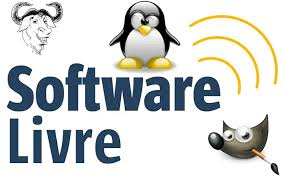
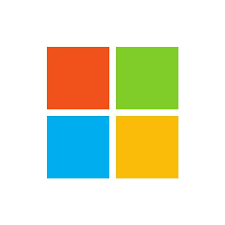
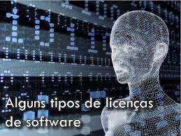
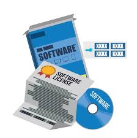
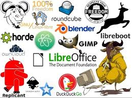
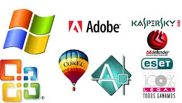

Conceito de Software
Sistema livre
é um tipo de software desenvolvido e mantido de maneira colaborativa, onde o código-fonte está disponível para todos que quiserem usar, investigar, alterar e redistribuir.

Sistemas Propietários
São muitas vezes desenvolvidos por empresas, como ocorre com aquele produzido e distribuído pela Microsoft.
Essas empresas possuem os direitos autorais sobre o software e, portanto, os usuários não podem acessar ao código fonte, distribuir cópias, melhorar ou fazer melhorias públicas.
Apple
A Apple é uma das maiores empresas de tecnologia do planeta. Ela foi fundada no dia 1º de abril de 1976 por Steve Wozniak, Steve Jobs e Ronald Wayne a fim de começar a produzir e vender seu primeiro produto: o computador Apple I, criado por Wozniak.
Desde 2011, a companhia é comandada por Tim Cook, que assumiu o posto de CEO após o afastamento e morte de Steve Jobs. Sob sua batuta, a companhia diversificou a linha de produtos ao consumidor. e foi graças ao sucesso comercial pós-2001 fez com que a empresa alcançasse algumas marcas históricas. Em 2018, a Apple se tornou a primeira companhia de capital aberto a superar US$ 1 trilhão em valor de mercado.

Microsoft
A Microsoft é uma empresa de tecnologia fundada por Bill Gates e Paul Allen, em 1975, nos Estados Unidos. Com sede em Redmond (Washington), a companhia atua no suporte e desenvolvimento de softwares, dispositivos e serviços relacionados à computação pessoal, produtividade e soluções em nuvem. Além disso, a marca também tem expressiva participação nos segmentos de inteligência artificial, realidade virtual e games.
Participante do The Global 2000 da Forbes, o ranking que seleciona as companhias mais poderosas do cenário mundial, a Microsoft ocupa o décimo segundo lugar da edição de 2022, com valor de mercado avaliado em US $2,054 bilhões.

Tipo de Licença
Trata-se de um documento que define como o produto deve ser utilizado, onde podem ser restringidas a cópia, a distribuição ou a adaptação da aplicação. Enfim, define o que um usuário pode ou não fazer com relação a um determinado software, sendo o próprio desenvolvedor o responsável por definir tais diretrizes.
Existem diversos tipos de licenças, podendo ser gratuitas ou disponibilizadas ao usuário a partir de um pagamento.

Licenciados
é, basicamente, um programa em que o usuário possui a permissão do fornecedor para ser utilizado. Ou seja, em outras palavras, quer dizer que o desenvolvedor permite a sua utilização por quem está fazendo uso.

Livres
é um movimento político e filosófico que preza pela liberdade de acesso do código fonte de qualquer software pela comunidade de usuários. Segundo a Free Software Foundation (FSF), qualquer usuário tem o direito de executar, copiar, distribuir, estudar, mudar e melhorar o software

Propietários
pertence a um indivíduo ou empresa e não está disponível para modificação ou distribuição pública. Os usuários normalmente devem adquirir licenças para usar software proprietário, o que geralmente inclui restrições sobre como o software pode ser usado.

Tipos de Software de Sistemas
As principais categorias de software são: Free software,Freeware,Adware,Shareware, incluem sistemas operacionais como macOS, Ubuntu (uma distribuição Linux) e Microsoft Windows, software de computação científica, mecanismos de jogos, automação industrial e aplicativos de software como serviço.

Aplicativo
um programa de software desenvolvido para ser utilizado em dispositivos móveis, como smartphones e tablets. Os apps têm como objetivo facilitar a realização de tarefas e proporcionar entretenimento aos usuários, tornando-se uma parte essencial da vida moderna.

Programção
é o processo de escrita, teste e manutenção de um programa de computador. O programa é escrito em uma linguagem de programação, embora seja possível, com alguma dificuldade, o escrever diretamente em linguagem de máquina. Diferentes partes de um programa podem ser escritas em diferentes linguagens.